DUANWU
端午绘本设计 Dragon Boat Festival
这是一个关于主人公小糯的端午节奇幻冒险绘本。画面采用复古国风结合现代噪点肌理，将传统民俗以极具想象力的方式呈现，营造出独特的电影感与叙事张力。
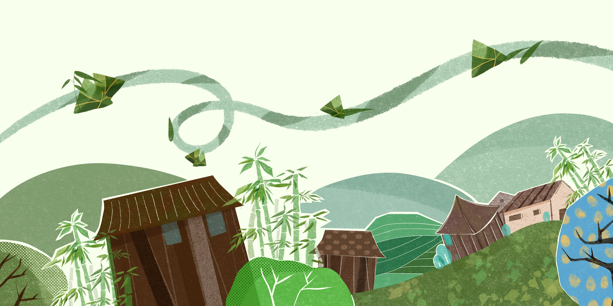
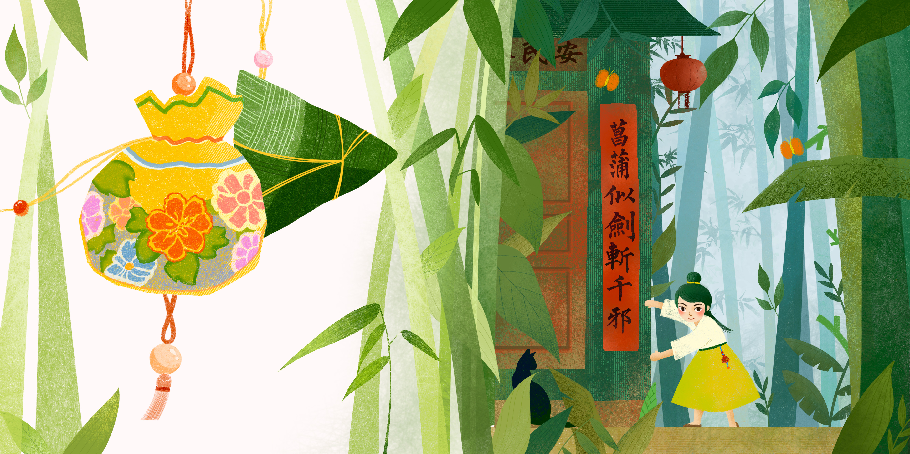
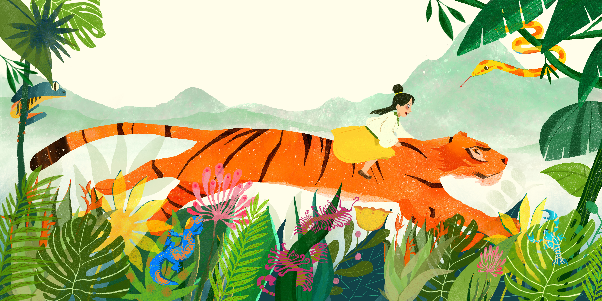

熟练驾驭平面、三维与 AIGC 工具。善于将传统文化与现代视觉语言结合，同时具备“运营思维+视觉产出”的复合型落地能力。
这是一个关于主人公小糯的端午节奇幻冒险绘本。画面采用复古国风结合现代噪点肌理，将传统民俗以极具想象力的方式呈现，营造出独特的电影感与叙事张力。



作为该项目负责人，我主导了此套海报的全流程设计。针对“文明养犬”等内核，采用现代明快的插画风格，让政务宣发更有城市人文温度。同时独立完成了在意大利风情区的线下展览布展设计。
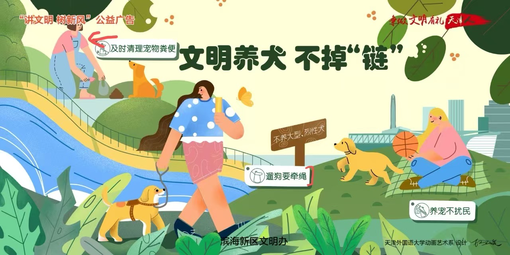
Design 01. 公益海报主视觉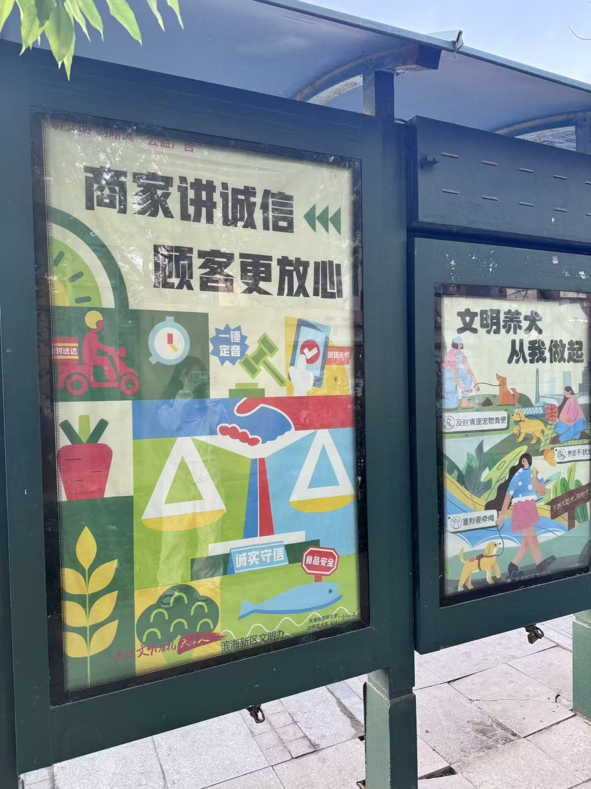
Landing 01. 滨海新区公交站牌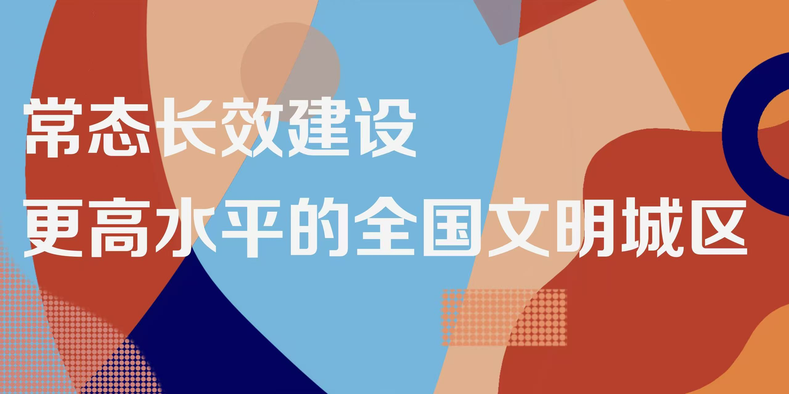
Design 02. 系列海报延展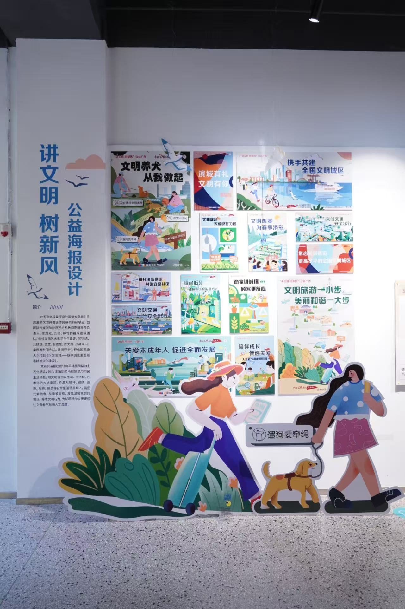
Landing 02. 意大利风情区布展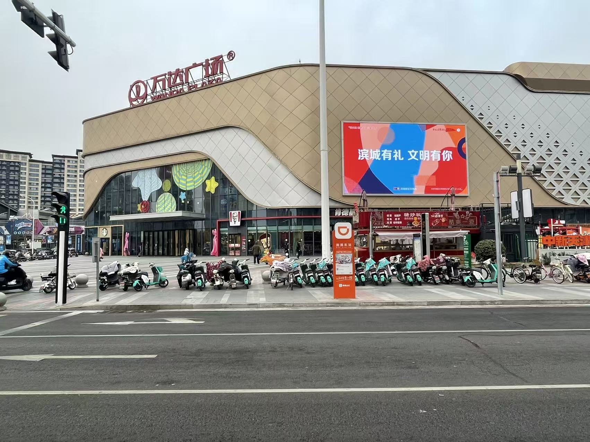
Landing 03. 万达广场 LED 大屏担任新媒体运营期间，不仅负责小红书和视频号内容策划，更直接操刀核心转化海报。运用运营思维设计的长图，精准击中痛点，有效提升了直播间转化率。
以福建昙石山文化为背景的儿童科普绘本。通过主人公“小昙”的探险故事，将晦涩的考古文化进行了生动的视觉降维，实现文化资产的活化与传播。
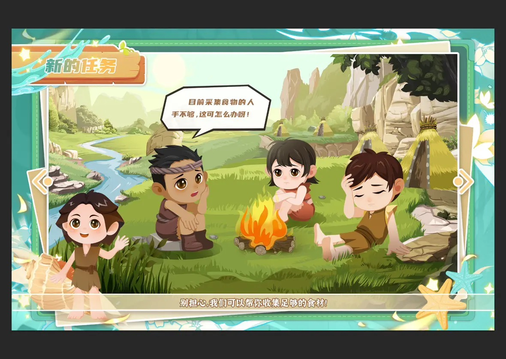
Illustration 01. 部落生活场景描绘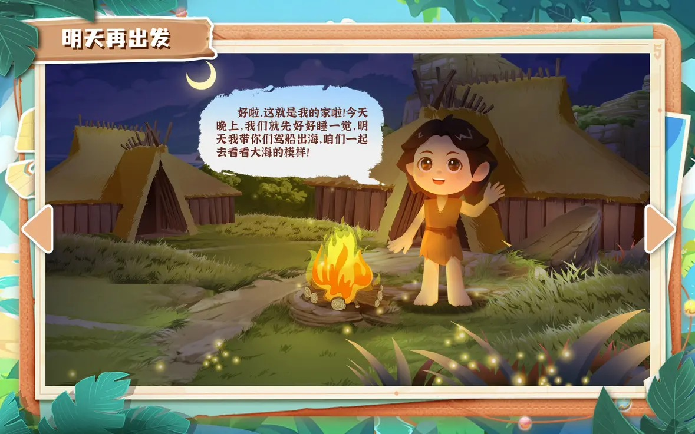
Illustration 02. 带领族人探索海洋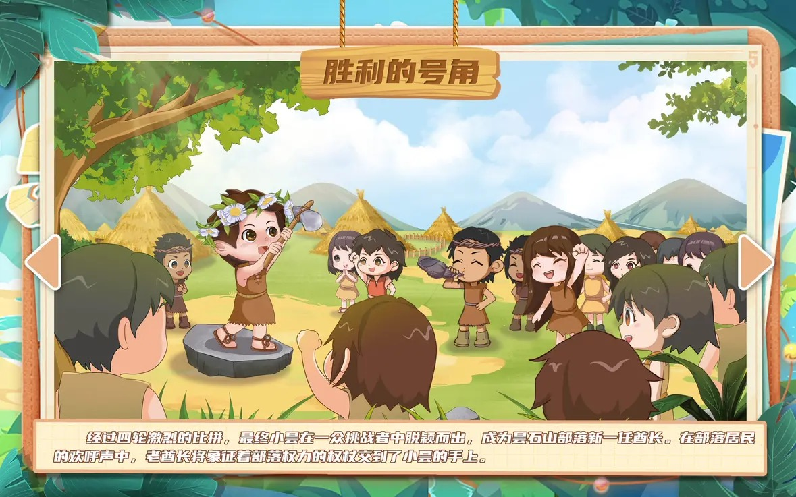
Illustration 03. 成为酋长解决危机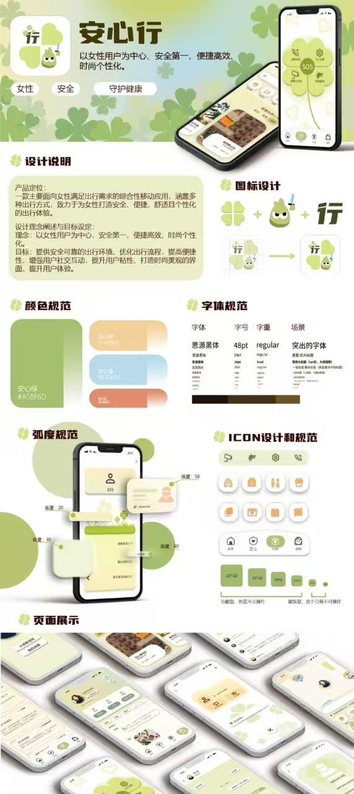
APP Poster Design. 安心行应用宣传海报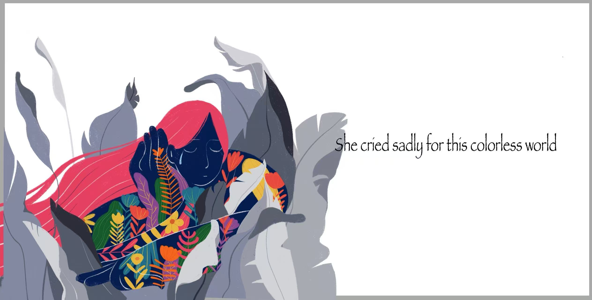
Original Illustration. 原创插画探索 01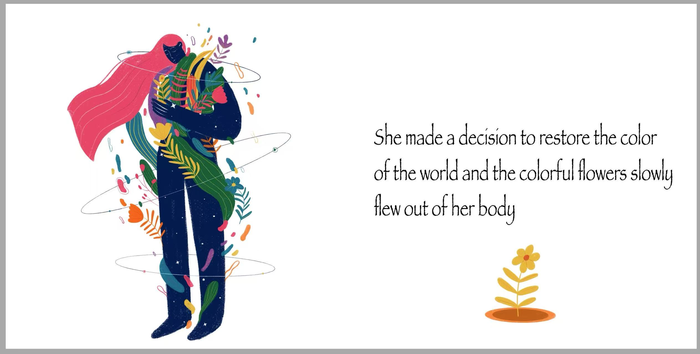
Illustration 02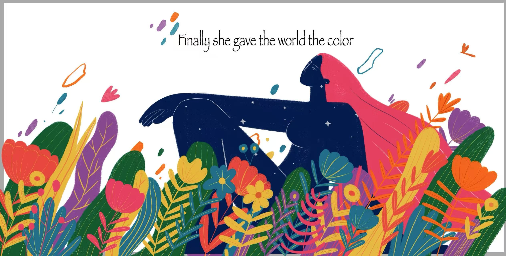
Illustration 03荣誉：大学生创业创新国家级项目、两岸新锐设计华灿奖二等奖。
主导海报项目全流程，负责明确目标与海报风格方向，协调设计与文案团队及甲方沟通需求；独立完成线下布展设计，成果落地于天津市滨海新区、意大利风情区及万达商圈。
负责小红书种草内容策划与宣发海报视觉设计；参与视频号直播脚本撰写与预热执行，通过懂用户痛点的视觉产出，有效推动课程转化。
主导福建昙石山文化背景的儿童科普绘本创作，将严肃的考古及文物讲解逻辑转化为生动的视觉降维设计，独立完成核心插画创作，大幅增强了文化资产在少儿群体中的接受度。